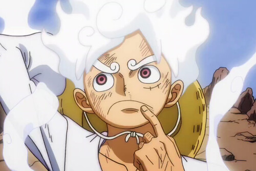
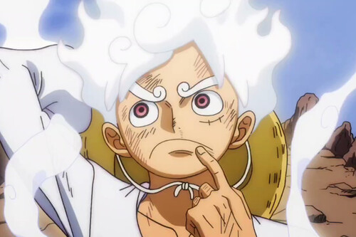
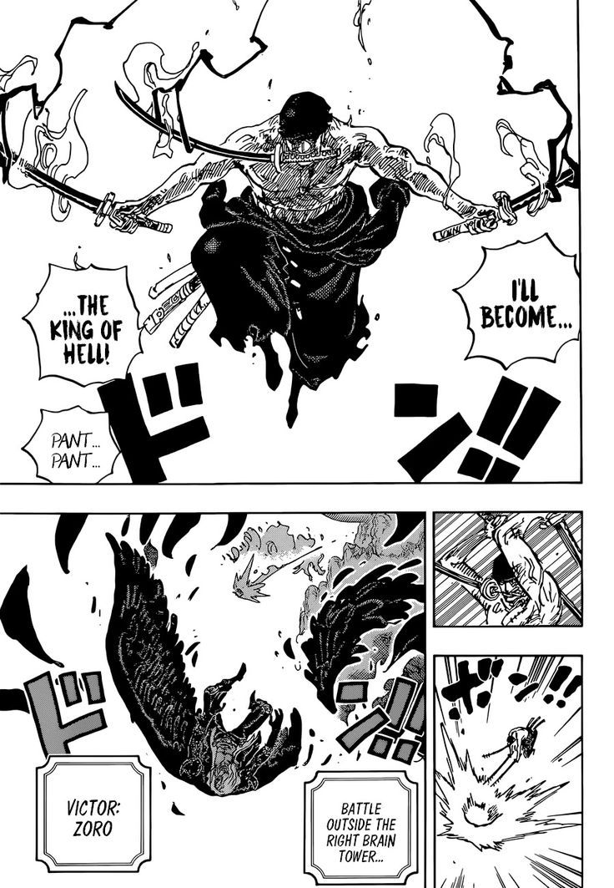
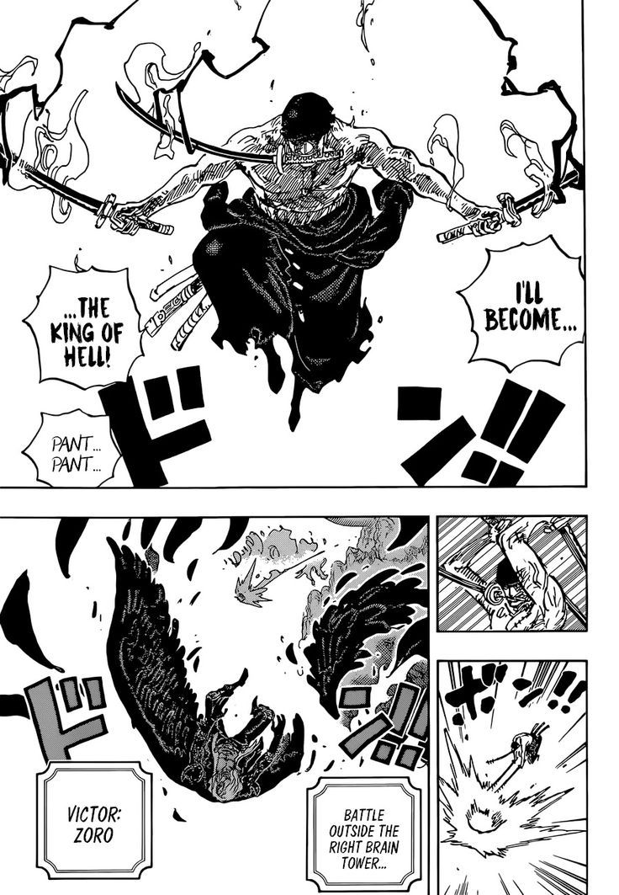

BIOGRAFÍA
Eiichiro Oda nació el 1 de enero de 1975 en Kumamoto, Japón. Desde temprana edad, mostró un gran interés por el manga y el dibujo, inspirado por autores como Akira Toriyama, el creador de Dragon Ball. Su pasión por el manga lo llevó a estudiar artes visuales y a soñar con convertirse en mangaka. A los 17 años, Oda presentó su primer trabajo profesional, y a los 19, comenzó a trabajar como asistente de otros mangakas conocidos.
 

LOGROS

Eiichiro Oda comenzó su carrera profesional a los 17 años, pero fue su trabajo como asistente para otros mangakas lo que le permitió perfeccionar su estilo y ganar experiencia. A los 22 años, debutó con su propia obra, Romance Dawn, que fue la semilla de One Piece. Este manga, publicado en la revista Weekly Shonen Jump, rápidamente ganó popularidad gracias a su originalidad, personajes memorables y su rica narrativa. A lo largo de los años, One Piece ha alcanzado niveles de éxito inimaginables. Con más de 500 millones de copias vendidas a nivel mundial, se ha convertido en la serie de manga más vendida de la historia, superando incluso a gigantes como Dragon Ball y Naruto. La obra también ha sido adaptada a anime, películas y videojuegos, consolidando a Oda como una figura icónica de la cultura pop. Entre sus logros más notables, Oda ha recibido varios premios y reconocimientos, incluyendo el Premio Shogakukan Manga Award y el Premio Guinness por la mayor cantidad de copias publicadas por un solo autor para una serie de cómic.

ONE PIECE, la obra de su vida
One Piece es una obra maestra de aventuras que sigue las peripecias de Monkey D. Luffy y su tripulación de piratas mientras navegan por el vasto y peligroso océano en busca del legendario tesoro conocido como "One Piece".

Creada por Eiichiro Oda, esta serie ha sido publicada ininterrumpidamente desde 1997 en la revista Weekly Shonen Jump.
La serie está llena de personajes coloridos, emocionantes batallas, misterios y giros inesperados, lo que ha cautivado a millones de fans en todo el mundo. Cada arco de One Piece introduce nuevos mundos, amigos y enemigos, y explora temas como la amistad, la libertad y la lucha por los sueños.

Con más de 1000 episodios de anime y más de 1000 capítulos de manga, One Piece es una de las historias más largas y profundas de la historia del manga, una obra que ha influido enormemente en la cultura del entretenimiento global.
Algunos de los arcos más memorables incluyen Enies Lobby, Marineford, y Wano, donde la lucha por la justicia, la libertad y el poder se lleva al límite.
ESTILO DE DIBUJO
 
